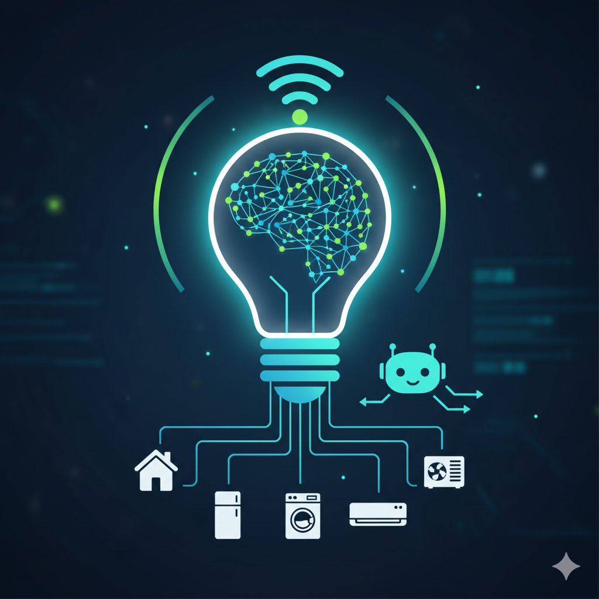
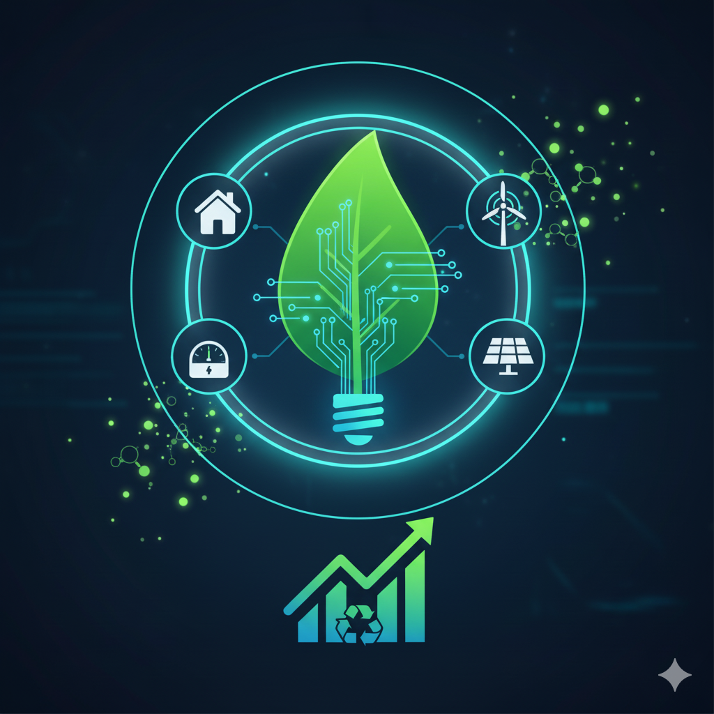
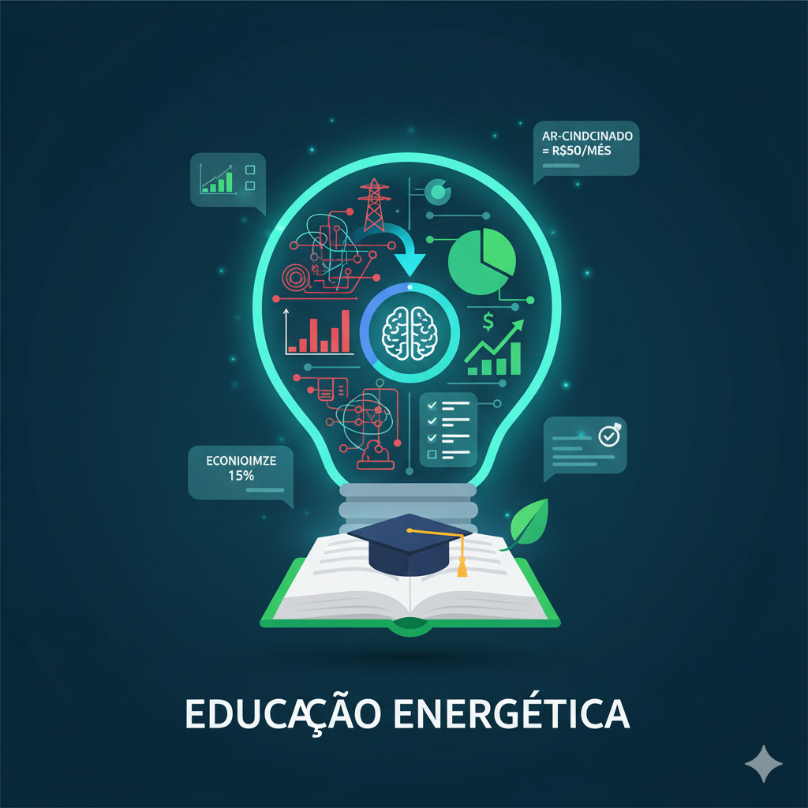

Sobre a WattsApp
Acreditamos que você não deveria ter surpresas na sua conta de luz. Você deveria ter controle!
Nosso propósito
O Wattsapp nasceu de uma frustração universal: a conta de luz alta e misteriosa no fim do mês. Em um mundo onde gerenciamos nossas finanças, transporte e comunicação na palma da mão, por que continuamos "cegos" sobre como usamos nossa energia? Essa falta de visibilidade não gera apenas estresse financeiro; ela causa um desperdício passivo e ineficiente que afeta milhões de famílias. Nós decidimos que era hora de mudar isso. Nosso propósito é simples: ajudar famílias a, finalmente, entender e reduzir seu consumo de energia. Usamos tecnologia de ponta para transformar dados complexos em economia real e previsibilidade para o seu bolso.
Nossa Bússola
Tudo o que fazemos é guiado por estes princípios:
Nossa Missão:
Democratizar o acesso à inteligência energética. Capacitamos pessoas com dados claros e insights acionáveis para que tomem decisões conscientes sobre seu consumo.
Nossa Visão:
Ser a plataforma de gestão de energia residencial mais confiável e essencial do Brasil, redefinindo a relação do consumidor com a eletricidade.
Nossos Valores:
Inovação com Propósito: A tecnologia só importa quando resolve um problema real.
Educação que Capacita: O conhecimento é o primeiro passo para a mudança.
Transparência Total: Seus dados, suas regras. Nossas informações são claras e honestas.
Sustentabilidade na Prática: Acreditamos que a economia individual gera um impacto coletivo.
O Futuro da Energia é Inteligente, Sustentável e Educativo
O Wattsapp é construído sobre três pilares que definem nosso produto e nosso impacto:
Inovação (IoT e IA)
Não somos apenas um medidor bonito. O Wattsapp é uma plataforma de software robusta, alimentada por uma infraestrutura IoT proprietária. Nossos algoritmos de Machine Learning — validados cientificamente em parceria com universidades públicas — são o que nos permite "desagregar" seu consumo e identificar padrões que ninguém mais vê.
Sustentabilidade
A forma mais eficaz de ser sustentável é combater o desperdício. O Wattsapp é uma ferramenta ativa de sustentabilidade: ao identificar o consumo "fantasma" e os aparelhos ineficientes, ajudamos nossos usuários a reduzir sua pegada de carbono e a otimizar o uso dos recursos naturais, gerando uma economia que faz bem para o planeta e para o bolso.
Educação Energética
Acreditamos que dados não servem para nada se não forem compreendidos. Nosso aplicativo não mostra apenas gráficos complicados; ele "traduz" seu consumo. Em vez de "Pico de 4.5 kWh às 19h04", dizemos: "Seu chuveiro elétrico foi o maior vilão da sua conta ontem. Reduzir 5 minutos no banho pode economizar R$ 40 este mês."